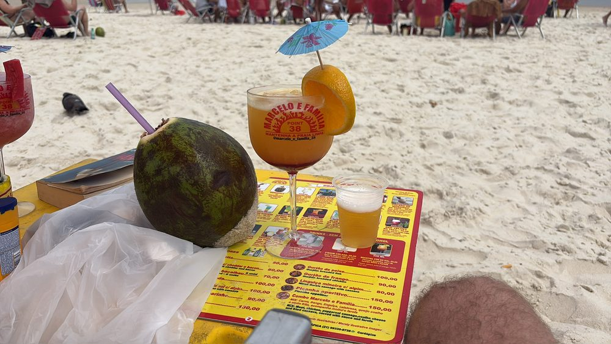
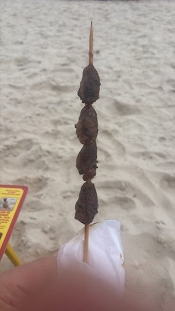
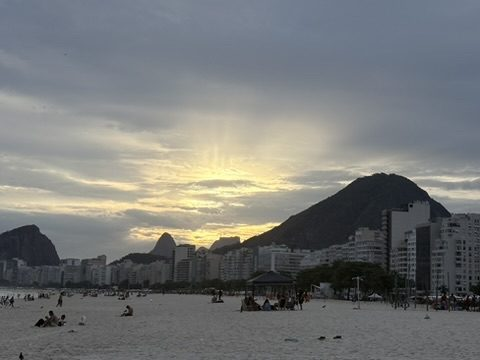
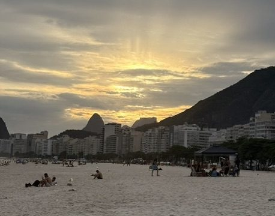
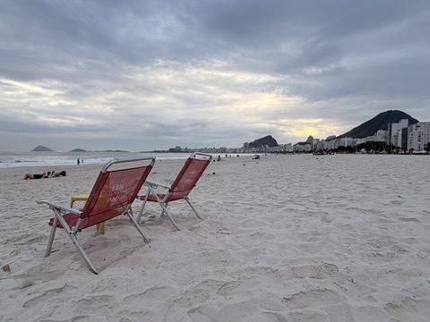
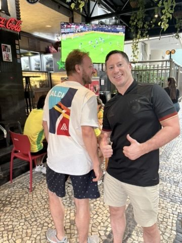
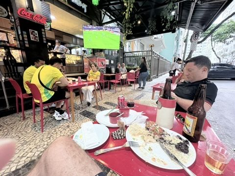

Two quiet days: No plans, just beach: caipirinha in the sand, an espetinho from the grill vendor, and in the evening the sunset behind the Copacabana high-rises. On Monday, football at the botequim around the corner.






